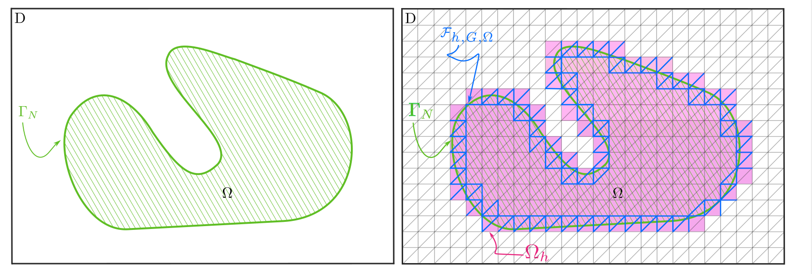
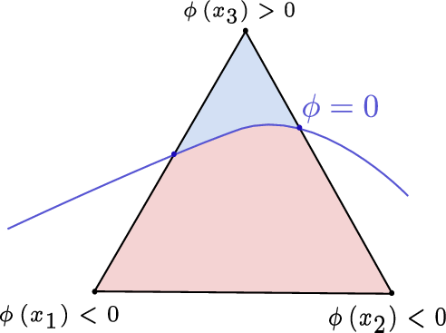
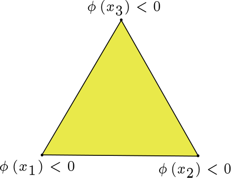
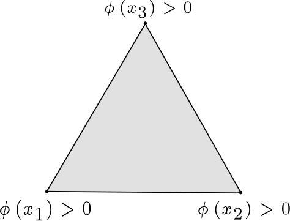
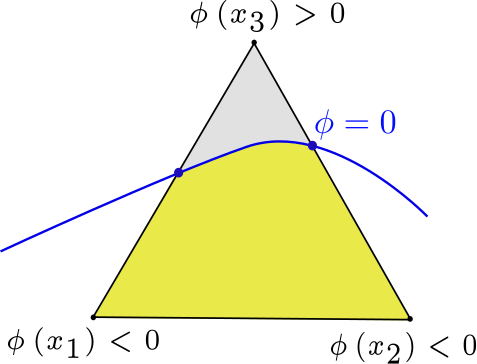
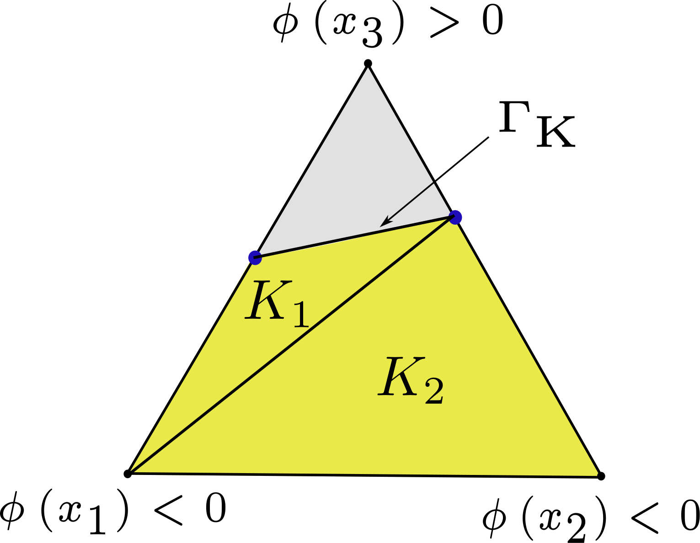
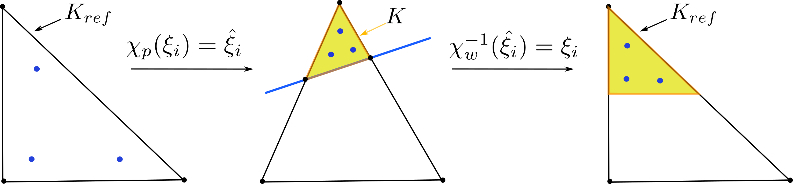
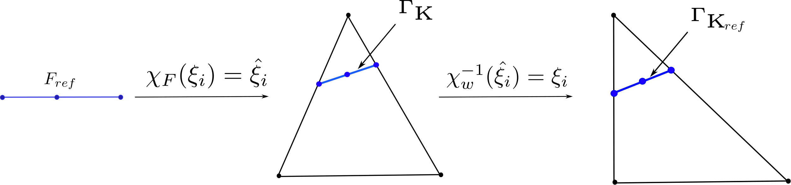

CutFEM for Immersed geometry discretization¶
The mathematical context of CutFEM method including a detailed description of the implementation aspects is explained in this section.
Definition of mesh parts¶
The fixed working domain \(D\) is discretized using a triangular or tetrahedral mesh denoted by \(\mathcal{K}_{\;h}\). Let \(K\) denote the elements in the mesh, let \(F\) denote the facets in the mesh (i.e. edges in 2D and faces in 3D) and \(h\) be the element size. Let \(\mathcal{F}_{\;h}\) denote the set of all facets in the mesh.
We define the set of active elements of the mesh and the set of active facets of the mesh as all elements or facets that have at least a part in \(\Omega\)
The union of all active elements forms the active part of the mesh denoted by
Note that, \(\Omega_{h}\) is in general not aligned with \(\partial\Omega\). It consists of the smallest set of elements that contains the domain as illustrated by pink elements in Figure 17.
Furthermore, we define a set of facets of intersected elements, which will be used for stabilization terms
Note that these facets are intersected facets as well as facets contained fully inside of \(\Omega\) belonging to intersected elements.


Figure 17 Illustration of CutFEM domain and face definitions.¶
For each face \(F\in\mathcal{F}_h\), we denote by \(K_{+}\) and \(K_{-}\) the two elements shared by \(F\) and \(n_{F}=n_{\partial K_{+}}\) the normal to the face pointing from \(K_{+}\) to \(K_{-}\).
Interface discretization¶
Given a level set function to describe our evolving domain \(\Omega\), we mainly distinguish between the following two immersed interface discretizations:
a smooth interface representation
a sharp interface representation.
Smooth interface representation¶
The boundary of our domain is represented by a smeared out or smoothed interface. The domain described by negative level set values and the domain described by positive level set values are blended by a smoothed Heaviside function \(H_{\eta}\). To apply interface terms, the derivative of the Heaviside function is taken to obtain a smoothed delta function. This smoothing approach entails two main drawbacks. Firstly, the smoothed interface region requires resolution with a large number of elements. Secondly, smearing out of the interface reduces accuracy. In this article, we use the following approximation of the characteristic function proposed in [ADJ21]:
Discretization of outside domain \(D \setminus \Omega\)¶
We introduce two main approaches to approximate the material outside of the material domain \(\Omega\), i.e. \(D \setminus \Omega\).
Ersatz material method¶
Proposed in [AJT04], an Ersatz material with small material parameters is introduced in \(D \setminus \Omega\) to extend the problem formulation from domain \(\Omega\) to the fixed working domain \(D\). Using small material parameters instead of setting material parameters to zero outside of \(\Omega\) avoids singularities in the stiffness matrix. In practice, a characteristic function \(\chi(x)\in\left\{0;1\right\}\), representing the presence or absence of soft material is defined for each \(x\in D\). Then we can construct an extension of the elasticity tensor on the entire domain \(D\):
where \(\beta\) is the elasticity tensor of the solid material and \(\alpha=\varepsilon\beta\) is the elasticity tensor of the soft material. We set \(\varepsilon=10^{-3}\). \(\chi(x)\) is a characteristic function defined as :
We use the smoothened characteristic function (17). The Ersatz material method is simple to apply and to implement but it may suffer from a lack of precision in the calculation of mechanical fields, particularly for coarse meshes.
Note
Implementation Note: In OptiCut, this approach is fully implemented in the solvers/ersatz_elastic_solver.py module. The physical properties are penalized according to the smoothed Heaviside function evaluated on the standard finite element integration points.
Zero extension outside of active mesh (Deactivation)¶
An alternative to using the Ersatz material method is to set all unknowns to zero outside of \(\Omega\). In practice, we set the unknowns, in our case the displacement, to zero in all degrees of freedom which do not belong to the active mesh.
Note
Implementation Note: The deactivation of external degrees of freedom is handled automatically in OptiCut when using CutFEM. The linear algebra backend zeroes out the matrix blocks corresponding to the outside domain, maintaining problem sparsity without ill-conditioning.
Cutting and Integration¶
In our CutFEM approach, we represent the boundary as a sharp interface. As such, we reconstruct the zero level set contour line by computing linear cuts through the mesh elements. We then integrate on those resulting cuts (volume and boundary cuts) as detailed below. For simplicity explanations are given in detail for dimension two. As mentioned above, we use a level set function, \(\phi\), to describe \(\Omega\). We approximate \(\phi\) in a finite element space by interpolation, which we denote as \(\phi_h\). This means, using linear Lagrangian elements, \(\phi_h\) has one value in each vertex of the mesh, which we then use for cutting.
Element Categorization¶
In the first step, the sign of the level-set function is checked in each node of the element to determine if the element is intersected by the interface (changing sign), within the domain (\(\phi_h(x_i)\leq0, \forall i\)), or outside (\(\phi_h(x_i)>0, \forall i\)). An example is given where the elements in Figure 18 is marked as intersected by the interface, the element in Figure 19 is marked as an element of the active domain and the element in Figure 20 is marked as element outside of the active domain.
Interface Reconstruction and Cutting¶
To reconstruct the interface in order to integrate over \(\Gamma_K\) and \(\Omega_K = \Omega_h \cap K\), a simple linear interpolation of level set values is used to calculate the points of intersection between the edges of the element \(K\) and the interface. Then we use these intersection points to obtain a linear approximation of \(\Gamma_K\) and \(K \cap \Omega_h\) (see Figure 21 and Figure 22).


Figure 18 Element cut by the interface.¶


Figure 19 Element in the active domain.¶


Figure 20 Element outside the active domain.¶


Figure 21 Triangle cut by the boundary \(\Gamma\).¶


Figure 22 Sub-triangulation construction.¶
Sub-integration for volume integral¶
We generate the quadrature rules over \(\Omega_K\) by sub-triangulation. For straight cuts in a triangle, this means either a triangle part or a quadrilateral part which we split into 2 sub-triangles. Figure 22 shows an example of the sub-triangulation of a triangle element Figure 21. To generate the integration rule, we map the standard integration rule from a standard reference element onto a cut reference element. We define a mapping between the quadrature rule on the reference element and the sub-elements \(K_1\) and \(K_2\), which transforms the quadrature rule on the reference element to a quadrature rule on \(K_1\) and \(K_2\) elements. Note that this means we now need to evaluate shape functions and their derivatives in non-standard points inside the reference element (see Figure 23).


Figure 23 Illustration of mapping corresponding to sub-triangulation.¶
Sub-integration for interface (or surface) integral¶
To integrate over the interface (or surface) parts \(\Gamma_K\), we use a similar technique to generate the quadrature rules. The important difference is here that the element used to generate the quadrature rule has a different dimension toe the reference element in which the quadrature rule is used. This means, we interpret the interface represented by an interval reference element as part of the triangular element. We map the integration rule from the standard reference interval (1D) to part of the triangle (2D). This mapping is mixed dimensional to generate the quadrature rule. An example of the approximation of the \(\Gamma_K\) integral as part of \(K\) is given in Figure 24.


Figure 24 Illustration of mapping corresponding to sub-integration over \(\Gamma\).¶
We will henceforth refer to these integrals as cut integrals and their mesh parts as cut meshes.
Note
Implementation Note: OptiCut leverages the cutfemx library to perform this exact sub-triangulation and generate the custom quadrature rules dynamically. The active cells and interface facets are identified and processed seamlessly within the _build_measures method of the CutFEMElasticSolver class.